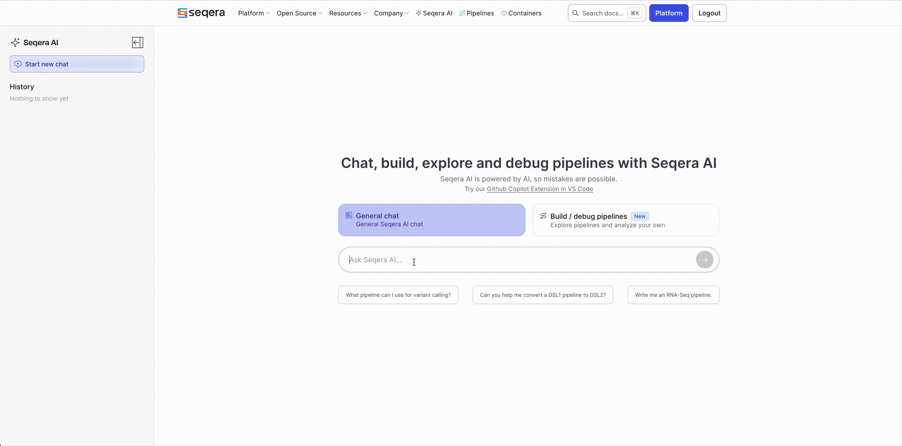

Seqera AI: Bioinformatics Agent for Nextflow
Seqera is the company behind Nextflow. They have built an Bioinformatics AI agent trained specifically for Nextflow. You can use this to accelerate your workflow building and reduce the time you spend troubleshooting so you can spend less time on the undifferentiated work and more time crafting your bioinformatics pipeline.
Here are the steps to using it: 1. Visit Ask-AI by Seqera. 2. Sign in using your GitHub or Google account.
💡 You can also try the Nextflow VS Code Extension for inline AI support while coding. 3. Type a question or paste a prompt into the input bar to get help instantly.
